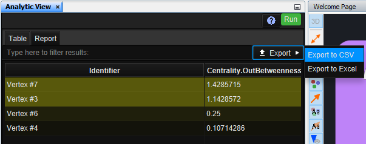
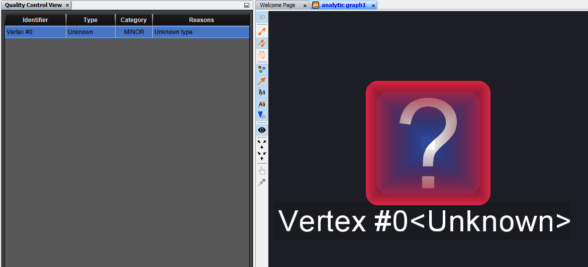
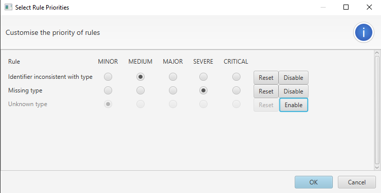
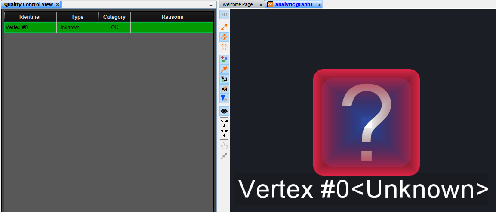

What's new in Constellation v2.9
Here is a list of changes we've added to this version of Constellation v2.9 which are also included in Constellation Cyber v1.8.
Custom Icons Now Saved with the Graph
Have you ever shared a graph with someone only to discover that the other person can’t see any of the cool custom icons you added to your nodes? Worry no more as changes have now been made so that custom icons are now saved with the graph. This means you are now able to share graphs with others without the extra step of re-adding the icons for each person it is shared with.
Export Results from the Analytic View
A new feature has been added to allow you to export the table of results from the analytics you run to either a CSV or Excel file. This will enhance your analysis by allowing you to more easily use the results outside of Constellation if needed.
Enable or Disable Quality Control Rules
The Quality Control View allows you to verify your data against some static rules to determine data quality. Sometimes though, you may find that certain rules aren’t relevant or useful during your analysis and so the view can clog up with unhelpful information.
New to 2.9, alongside changing rule priorities, you can also now enable or disable rules to suit the analysis you are doing. Rules that are disabled are ignored and not factored into determining the quality rating of a node (even if that node would otherwise flag that rule).
  Constellation Preferences now Consolidated
A number of tabs in Constellation Preferences (Setup -> Options -> CONSTELLATION) have been consolidated to make it easier to use:
- The settings previously found in the Application Font tab are now found in the Application tab
- The settings previously found in the Anaglyphic tab are now found in the Graph tab
As a further enhancement, the tabs are now in Alphabetical order so that they can be more easily found.
Default Datetime Formatter Improvements
The default datetime formatters used to import from the File and Database Importers have been updated to cover single digit hours and dates. A couple of new formatters with no seconds have also been added as default options.
Several Bug Fixes
A number of bug fixes have also been made. These include:
- Columns in the Table View with numerical data are now sorted numerically rather than lexicographically
- The EPOCH datetime formatter can now handle EPOCH datetimes presented in scientific notation
- The new Find View (in Experimental) now properly traverses results when you search all open graphs
- Select All and Deselect All actions are only applied to UI element in focus (e.g. applying select all in a text box won’t then select everything on your graph)
Want to know more?
You can find out more information about the latest updates on the What's new page once you have installed version 2.9. There's loads of extra details available in the Release Notes and Change Log.
Would you like to learn more about how Constellation works?
There is a training package available on GitHub to learn how to make the most use of the various features in Constellation. There is also developer training for those seeking to deep dive into the underlying source code.
Contact Us
Do you have any feedback or suggestions for improvement? Noticed a bug? You can log an issue via the Help menu or clicking here.